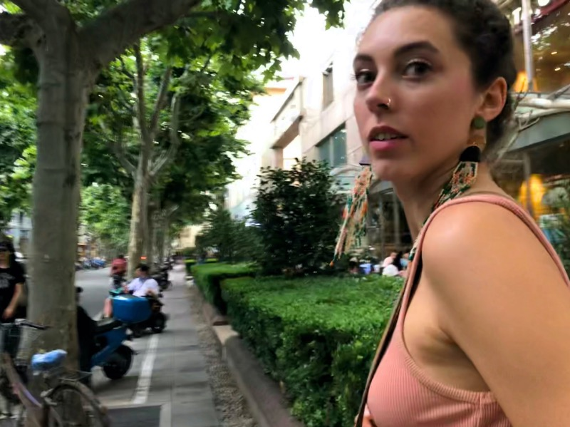
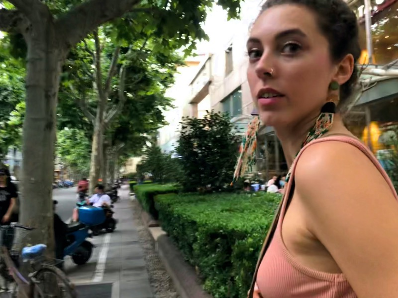
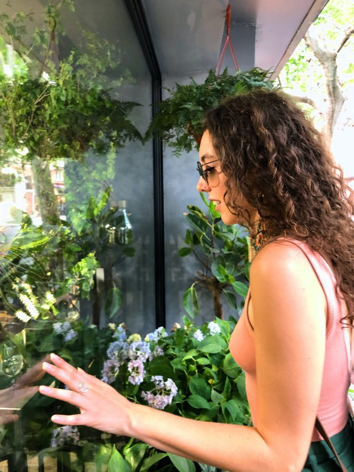
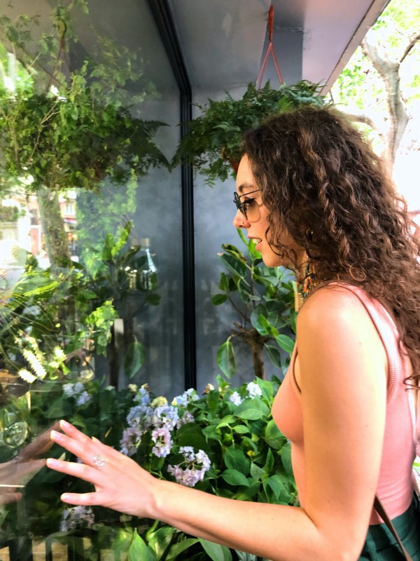

Carrie Reid, USA
June 18, 2020
Believe in your Vision
Two weeks after graduating high school, I jumped on a plane to Beijing, China.
Leading up to this decision was a mix of spontaneity and a serious case of the butterflies.
A few months prior, I confessed to my mom that I had no idea what major I wanted to pursue in college. This conversation and what was to follow is something I will never forget, it was the advice my mom shared with me that day that would inspire a new cycle of life, a new beginning to a foreign chapter. She said if I do not know what major I want to choose then it wouldn’t be a bad idea to learn another language in the meantime, a critical language to be exact. I was between Russian and Chinese.
I felt like entering the Mandarin speaking world was opening a universe with a much greater global reach considering it is the mother tongue of over 1 billion people. I also wanted to do something different than the people I grew up with in my small town weighing in at a whopping 17 thousand people.
It was my first time traveling abroad without my parents. I was 17 years old and quite frankly, scared shitless.
When I arrived in Beijing, I gathered up the tiniest bit of Chinese I learned online and asked the taxi driver to drop me at Beijing Language and Culture University. The driver dropped me two streets parallel to my dormitory where I asked him to take me. I couldn’t find my way around. (Soft reminder, there were no smart phones at this time.) I had to rely on my 5 Chinese characters to navigate Beijing. I had practiced how to say “Please take me here…” but I had not practiced how to say “I am lost!”. I rolled my tiny, lime green suitcase through foreign streets. I was thinking to myself “Seriously Carrie?”, “Why are you here?” and most importantly “What is that smell?”…
It is funny how the mind plays tricks on us when things start to go wrong. My immediate reaction was to think I am ill equipped for a task as big as China. I don’t have what it takes but actually, I did have what it takes, and that is the story I want to share with you today.
Every summer during college, I traveled to China and did an intensive language program for two months. There was always a bit of a culture shock at first, but I ended up having an amazing time. I loved the sights, the food, and even the hot, humid summer weather. I signed a language pledge and didn’t speak English the entire duration of my studies (except for the rare occasion I skyped my mom). I really kept those promises. Every time I was stuck in a situation and couldn’t think of the word, I wrote it down in my notebook, went back to my dormitory, found it in my dictionary, translated it and fingers crossed I would remember it the next time.
Seeing Chinese being used in real life was exciting to me, and I felt a sense of achievement every time I could recognize a character on a sign or understand what someone was saying. Don't let me fool you, there were many times where I wanted to give up, many times where I did not believe in myself and plenty of times where I wanted to burst into tears. But, there was the universe, supporting me, encouraging me and somehow continuously showing me the way just when I thought I would quit. Thank you, Universe.
After graduating college, I tested fluent in Mandarin Chinese. Now, I have been living in Shanghai for four years. My first job was working at a co-working space where I was the only foreigner in the company. Every meeting was held in Chinese, every email was written in Chinese, every phone call and chat over morning coffee was made in Chinese. I remember thinking to myself after I hosted an opening party in Chinese, “Damn I can’t believe I just did that.” What this language has brought me is way more than this, it’s the people around me that have become my main motivation to keep learning Chinese.
This language has allowed me to weave myself into a society that is so different from where I grew up. Having my old Shanghainese neighbors call for a helping hand, having my Ayi invite me to her home to make dumplings, exchanging doggie conversations with people on the street, giving an ear full to the laoban who tries to rip me off, this is the real accomplishment.
I never imagined I would live in China permanently or that I would be so comfortable navigating life here. Now, I walk the streets of China with my lime green suitcase and think “Hmm… what is that fascinating smell”.
 



 
